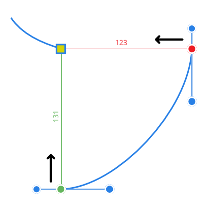

You can take advantage of curve snapping either as you draw with the Pen Tool or when editing the curve with the Node Tool. Curve snapping gives you accurate positional control of nodes where a more symmetrical approach to curve drawing is needed.
The curve snapping options are hosted on the Pen or Node tool's context toolbar. Snapping options can be used in combination with each other.
| Snap option | Description | Example |
|---|---|---|
| Align to nodes of selected curves | Aligns moving node horizontally (shows in red) or vertically (in green; not shown) to another node | |
| Snaps moving node to the same or different curve's path (shown in yellow) or node | ||
| Snaps multiple selected nodes (shows in red and green), when dragging, to a 'target' node (yellow) on any selected curves |  | |
| Align handle positions using snapping options | Snaps control handle using any of the snapping criteria currently set in Global snapping, e.g. to grid, guide, object geometry/node (shown in yellow), key points, etc. | |
| Snaps control handles to suggested angles and alignments for precise geometry and positioning. See separate Construction snapping topic. |